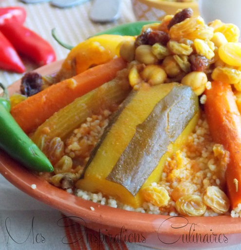

← Home page
Couscous
Le couscous est le plat traditionnel par excellence, surtout pour les cérémonies. D'origine berbère, on le retrouve
dans l'ensemble du Maghreb et se compose de semoule, de légumes et de viande - généralement de l'agneau.

Temps de préparation : 10mn
Temps de cuisson : 1h
Ingrédients
- 500 g de viande d'agneau
- 1 oignon émincé, 3-4 carottes, 1 navet, 2-3 courgettes, 2 pommes de terre, 2 gousses d'ail, 2 ou 3 piments verts
- pois chiche trempée la veille
- 1 cuillère à café de harissa
- 2 cillères à soupe de concentré de tomate
- 3-4 tomates
- Couscous Moyen
Instructions
- Dans le bas du couscoussier faire chauffer l'huile d'olive, ajouter l'oignon émincé.
- Ajouter la viande. Ajouter le concentré de tomate, tomate, ail ainsi que la Harissa.
- Mélanger bien le tout. Ajouter les épices. Ajouter un peu d'eau et laisser le tout s’imprégner.
- Ajouter les pois chiche et les carottes.
- Couvrir d'eau chaude en hauteur. Laisser cuire à feu moyen 30 minutes.
- Ajouter le reste des légumes.
- Placer le couscoussier (Keskes) au dessus de la marmite.
- Placer le couscous dans le haut du couscoussier et cuire 30 minutes.
- Verser dans une Gas3a (un grand récipient spécial couscous) arroser d'un filet d'huile d'olive.
- Disposer dans une assiette creuse de service
- Faites un puits au centre et disposer la viande, ainsi que les légumes autour.
- Arroser de sauce pas trop vous pouvez ajouter durant la dégustation.